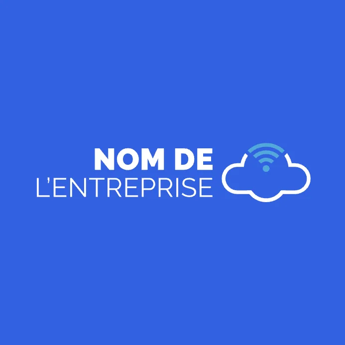

Développeur fullstack, spécialisé backend, j'ai réalisé de nombreux projets, que ce soit dans le monde de
l'entreprise ou dans l'entrepreneuriat.
Je peux vous accompagner dans votre transformation. Un projet de refonte, d’évolution, maintenance,
rien ne me fait peur.
Riche de mes expériences, je suis capable d'intervenir durant tous les cycles du développement
logiciel :
Animation d’ateliers pour formaliser les besoins et aligner les parties prenantes.
Conception et amélioration des parcours utilisateurs.
Création de user stories claires pour des cycles de développement courts et efficaces.
Développement de solutions robustes et maintenables.
Livraison et déploiement dans des environnements cloud performants.
Analyse de code pour identifier et réduire la dette technique.
Mise en place de tests automatisés pour renforcer la qualité du produit.
Montée en compétences des équipes sur les pratiques de développement et l’approche craft.
Garantie qualité
En tant que signataire du manifeste software craftsmanship, mes
développements sont garantis 0 bug. Néanmoins, de part la complexité de notre métier, si jamais vos
utilisateurs remontent des dysfonctionnements, une correction gratuite et immédiate sera apportée.
Expériences Professionnelles

Développeu - RISF
07/2023 - 12/2024 - Nice
Fournisseur de solution BSS pour les opérateurs téléphonique du groupe ILIAd
Contributions au développement du cœur de produit
Maintenance et évolution de la solution de facturation pour EIR/GOMO
Développement de la solution de facturation pour EPIC Malta
Développeur - Universign
07/2022 - 03/2023, Paris
Fournisseur de de solution pour la signature électronique
Améliorations des tests de l'application
Refonte du système d'authentification en intégrant des solutions multi-fournisseurs, incluant SAML2
et OAuth pour gérer différents types de connecteurs d'identité
Mise en place de stripe billing pour la partie abonnement
Développeur - RESOCOM
01/2022 - 06/2022, Paris
L'objectif de Cyberfiles est de fournir une application pour permettre la
dematerialization des inscriptions.
Implementation d'un provider d'identité (OKTA AUTH0)
Mise en place de la gestion des abonnements à l'aide de Stripe
CEO - NIZU
10/2019 - 12/2021, Dubai - UAE
L'objectif de NIZU est de fournir aux utilisateurs de taxi un moyen facile de se
réapprovisionner en produits essentiels pendant leurs trajets.
Développement de l'application
Commercialisation auprès des compagnies de taxi et des autorités
Ingénieur logiciel - Société Générale
10/2019 - 12/2021, Val de Fontenay - France
Développement d'une application pour gérer les entretiens professionnels des employés.
Développement d'une application pour collecter les données RH des collaborateurs des filiales.
Accompagnement des équipes lors du démarrage de nouveaux projets. Contribution aux librairies internes.